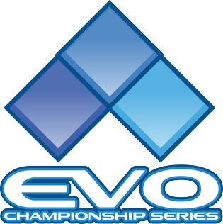
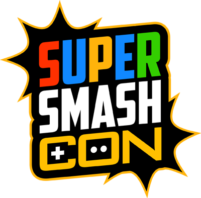
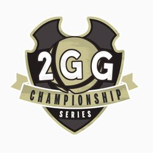

Tournaments

Evo is easily the biggest fighting tournament out there. It is equivalent to the Olympics for fighting games. Many people from all over
come to enter this tournament for their respective games. Smash Bros. for Wii U in recent times has been bringing in some of the biggest
pools to date. Making this tournament series one of the biggest chances for upsets to the even the greatest of players out there.

Super Smash Con is the place to go to for anything Smash. This is not an even focused solely on the competitive side. This is the tournament
go to for wanting to enjoy yourself with Smash. Many vendors selling merchandise and fun matches to watch all through the event. The place to satiate all
your Smash needs.

This is not one tournament, rather a tournament series. Much in tune with the series of games that goes through football and the like. These
are tournaments that if players make enough of an impact in, they will have a chance at the big bucks at the end of the year for the final tournament.
Every 2GGC tournament is always themed. The themes can be based on players, new games, or characters already in the game.